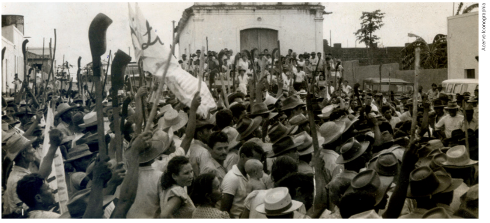
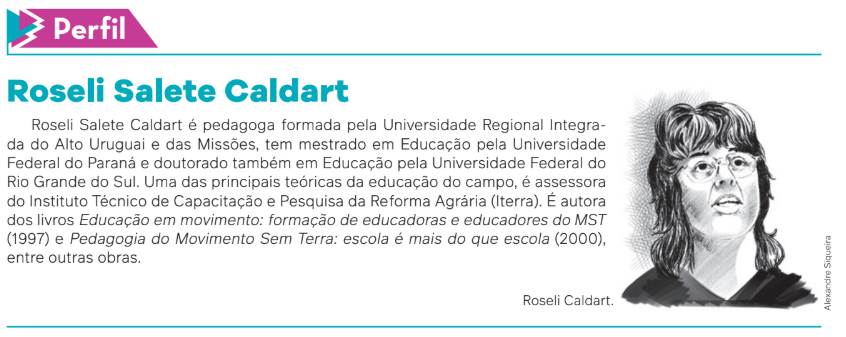

MTE resgatou 1443 trabalhadores de condições análogas à escravidão em 2023
O Ministério do Trabalho e Emprego, por meio da Fiscalização do Trabalho, resgatou, de janeiro a 14 de junho de 2023,
um total de 1443 trabalhadores do trabalho análogo à escravidão no Brasil. [...]
No ano passado [2022], no mesmo período, foram 61 ações, tendo sido resgatados 500 trabalhadores pela Inspeção do
Trabalho. Dos 174 estabelecimentos fiscalizados neste ano [2023], 38 deles ocorreram em MG, seguido de Goiás, com 21
e Rio Grande do Sul, com 14. Goiás ficou em primeiro lugar no número de resgates em 2023, com 390 pessoas resgatadas
pela Inspeção do Trabalho em condições de escravidão moderna. Em seguida vieram Rio Grande do Sul, com 304 resgates,
Minas Gerais com 207 e São Paulo com 184 pessoas resgatadas. O cultivo de cana-de-açúcar foi o setor onde ocorreu o maior
resgate de trabalhadores, seguidos das atividades de apoio à pecuária, cultivo de uva e a construção de estações elétricas.
O resultado se deve, principalmente, à atuação da fiscalização do ministério, que coordena as ações do Grupo Móvel em
parceira com outros órgãos ao longo dos anos, como a Polícia Federal (PF), Polícia Rodoviária Federal (PRF), o Ministério
Público do Trabalho (MPT), a Defensoria Pública da União e o Ministério Público Federal (MPF), além de outras instituições,
a depender do tipo de operação a ser realizada. As unidades regionais de fiscalização também são inseridas em atividades
permanentes de combate ao trabalho escravo, atuando quando demandadas.
Para levar a comida até quem tem fome, a Cozinha Solidária conta com um apoio fundamental da
rede de distribuição dos motociclistas de Canoas. Além de entregar as marmitas, os motociclistas também fazem uma conexão entre os atingidos e os parceiros. [...]
A intermediação de mão de obra ilegal ocorre, geralmente, por intermédio dos “gatos”, agenciadores que arregimentaram
trabalhadores de outras regiões para atuarem de forma degradante, colocados para laborar de forma extremamente precária,
sem as mínimas condições de trabalho decente.
[...]
MTE RESGATOU 1.443 trabalhadores de condições análogas à escravidão em 2023. Gov.br – Ministério do Trabalho e Emprego,
[Brasília], 16 jun. 2023. Disponível em: https://www.gov.br/trabalho-e-emprego/pt-br/noticias-e-conteudo/2023/junho/mte
-resgatou-1-443-trabalhadores-de-condicoes-analogas-a-escravidao-em-2023. Acesso em: 31 jul. 2024.
Apesar de a Abolição da Escravatura no Brasil ter ocorrido em 1888, no final do século XIX, a existência de
trabalhadores em condições análogas à escravidão ainda é uma realidade em nosso país, especialmente no
meio rural, como podemos observar na notícia publicada pelo Ministério do Trabalho e Emprego.
Para compreendermos a persistência desse problema social, entre outros fenômenos, vamos estudar,
neste capítulo, as dinâmicas do campo brasileiro.
Fiscalização do Ministério do Trabalho e Emprego
para combater o trabalho em condições análogas à
escravidão. Sacramento (MG), 2013.
A constituição do meio rural no Brasil
Podemos dizer que a questão da terra no Brasil teve início com a chegada dos europeus em 1500,
ocupando o território de forma predatória e vitimando especialmente os povos indígenas que aqui
habitavam. Esses povos continuaram sendo oprimidos ao longo dos séculos, em um processo que
pode ser observado até os dias atuais, com a ocupação de terras indígenas para extração ilegal de
madeira, a abertura de garimpos, a construção de estradas, entre outros.
A propriedade da terra no Brasil sempre esteve concentrada nas mãos de poucas pessoas. Podemos
usar como referência o momento em que todo o território da então colônia portuguesa foi dividido
em capitanias hereditárias, separado da colônia espanhola pelo Tratado de Tordesilhas.
Passando rapidamente pela história do Brasil, é possível nos perguntarmos:
• No tempo do Brasil Colônia, por que os povos indígenas foram massacrados em todas as partes do território?
• O que significou e por que ocorreu a Guerra dos Sete Povos das Missões?
• Durante o Brasil Império, por que foi aprovada, em 1850, uma Lei de Terras? O que ela de fato significava?
• No início do Brasil República, por que aconteceu o massacre do povo no conflito conhecido como Guerra de Canudos?
• Quais eram as questões em torno da Guerra do Contestado, ocorrida no início do século XX, no sul do Brasil,
entre Paraná e Santa Catarina?
Embora os momentos históricos destacados sejam diferentes, a lógica determinada pelos interesses econômicos
e políticos da classe dominante, formada por grandes proprietários de terras, acompanhou a luta pela terra no Brasil.
Concentração de terras
Começando pelo Brasil Colônia, qual foi o modelo adotado para a ocupação do nosso imenso território?
O rei de Portugal optou pelo sistema de sesmarias, as quais correspondiam a grandes extensões de terra
que foram doadas a pessoas de sua confiança, conhecidas como donatários.
Pode-se dizer que esses donatários se tornaram os primeiros latifundiários da colônia, ou seja, os primeiros
grandes proprietários de terras. Para extrair a riqueza delas, escravizaram os povos indígenas e, posteriormente,
os africanos, trazidos pelo tráfico negreiro.
Segundo o pesquisador Júlio José Chiavenato, uma norma que existia no regimento de 1548 – que determinava
as funções do primeiro governador-geral do Brasil, Tomé de Sousa (1503-1579) – foi a responsável pela instituição
não só do latifúndio como também da monocultura, implantando um modelo agrícola que perdura até hoje.
Frans Post. Engenho de
açúcar na capitania
de Pernambuco, em
meados do século
XVII, 1660. Óleo sobre
tela, 97 cm × 113 cm.
A concentração da terra nas mãos de poucos proprietários permaneceu durante todo o Período Colonial.
Esse tipo de estrutura tinha impactos negativos para o desenvolvimento da economia, o que levou o político
José Bonifácio (1763-1838), um dos membros da classe dominante, a apresentar uma proposta de legislação
que previa a possibilidade de redistribuição das terras improdutivas por parte do Estado.
No entanto, essa realidade seguiu inalterada até 1850, quando, durante o Império, a Lei no 601, conhecida
como Lei de Terras, acabou com o sistema de posse, determinando que a terra poderia ser adquirida somente
por meio da compra. Mas o que significou essa Lei de Terras, afinal? Uma das suas características foi a elevação
do preço das terras e a exigência de que o pagamento por elas fosse realizado à vista. Dessa forma, a venda das
terras públicas era dirigida para uma elite social. A proposta era que o dinheiro arrecadado fosse aplicado na vinda
de colonos europeus, que substituiriam a mão de obra dos escravizados na lavoura.
A Lei de Terras manteve o sistema de latifúndio, pois as terras públicas que não estavam ocupadas pelas
monoculturas de cana-de-açúcar, algodão e café tornaram-se muito mais caras do que as terras particulares.
Assim, a aquisição de terras foi possível apenas para pessoas que já tinham muitas posses.
O conflito que resultou na Guerra de Canudos (1896-1897) pode ser considerado um exemplo desse dilema entre os interesses de latifundiários e os da população mais pobre do país. A crise econômica na Região Nordeste se contrapunha à expansão da lavoura cafeeira e ao crescimento da Região Sudeste. Nesse período, a pregação religiosa do beato Antônio Conselheiro (1830-1897) acabou por reunir uma multidão de pessoas, a maioria delas empobrecida e sem terras onde trabalhar e cultivar, que encontraram nas palavras dele e nesse movimento formas alternativas de sobrevivência.
O massacre militar de Canudos foi a “solução” encontrada pelo governo dos coronéis da República Velha,
pressionados pelos latifundiários baianos que desejavam acabar com o movimento. Causava grande preocupação
a possibilidade de Canudos ganhar cada vez mais força e se consolidar como um espaço de autonomia política
e econômica.
Fotografia de sertanejos feitos
prisioneiros na Guerra de
Canudos. Bahia, 1897.
Apesar de apresentarem características específicas, é possível identificar questões em comum entre o que ocorreu
em Canudos e o que ocorreu com os revoltosos na Guerra do Contestado (1912-1916). No processo de expansão
capitalista no sul do país, a população camponesa foi expulsa de suas terras e, com o conflito, massacrada pelo Exército.
Assim como em Canudos, a forte resistência popular tinha entre suas bases a fé inspirada por lideranças religiosas.
A história da ocupação de terras no Brasil apresenta uma luta constante entre as demandas da população e o
interesse político e econômico da chamada “oligarquia dos coronéis”, que concentra grande parte das propriedades rurais. Atualmente, esses conflitos seguem ocorrendo, principalmente quando observamos como os interesses
dos grandes proprietários rurais prevaleceram sobre as necessidades da população.
Os trabalhadores do campo começam a se organizar
Durante a segunda metade do século XX, após o processo de industrialização que levou ao deslocamento
dos trabalhadores das áreas rurais para as cidades, a estrutura de concentração de terras no Brasil passou
a ser questionada com base em novas perspectivas.
Diferentemente do que ocorreu em Canudos e em outras regiões do país, a população rural passou a
empregar-se como trabalhadora assalariada nas empresas que comandaram o processo de modernização
capitalista do Brasil. Atuando muitas vezes como operários em fábricas, esses trabalhadores tiveram acesso
a benefícios adicionais e inéditos.
A partir da Era Vargas, após a Revolução de 1930, as categorias profissionais reconhecidas pelo Estado
passaram a ser reguladas por uma legislação que lhes garantia o recebimento de salário mínimo, férias
remuneradas, estabilidade no emprego, além de contarem com um sistema de Previdência Social incluindo
assistência médica e direito à aposentadoria. Porém, para os trabalhadores rurais, o tempo estava estacionado
no Brasil Império e na Primeira República, sem legislação trabalhista e direitos previdenciários.
Tanto o Estado Novo do presidente Getúlio Vargas (1937-1945) quanto a política da República Populista
(1946-1964) desenvolveram poucas ações de melhoria para a população que trabalhava nas áreas rurais.
A modernização capitalista brasileira, com as suas consequências para o trabalho assalariado, era um
fenômeno urbano, sem incidência no meio rural.
Diante desse cenário, em 1954, o Partido Comunista – que estava na clandestinidade, pois havia sido cassado
no Brasil em 1947, no contexto mundial de início da Guerra Fria – lançou a Campanha Nacional pela Reforma Agrária.
Ao mesmo tempo, em Vitória de Santo Antão, no estado de Pernambuco, uma associação fundada originalmente
pelos camponeses, com o objetivo de obter assistência jurídica, médica, educacional e funerária, entrou em
confronto aberto com os proprietários de terra.
Em 1959, como resultado da sua luta e da sua organização, essa associação camponesa conquistou
a desapropriação do engenho Galileia, que passou a ser administrado pelos próprios trabalhadores rurais.
Esse movimento, sob a liderança do advogado Francisco Julião (1915-1999), ficou conhecido como Ligas Camponesas.
Ele se espalhou por 13 estados brasileiros e se tornou uma referência nacional e internacional de luta dos
trabalhadores rurais pela realização de uma reforma agrária no Brasil.

Manifestação das Ligas Camponesas. Paraíba, 1964.
A causa da reforma agrária foi assumida como uma das bandeiras do governo presidido por João Goulart (1919-1976),
entre 1961 e 1964, fazendeiro e ex-ministro do Trabalho de Getúlio Vargas. A “lei agrária” de Goulart fez parte da lista
das prometidas “reformas de base” de seu governo, que se contrapunham aos interesses de grande parte dos
capitalistas e proprietários de terras com seus projetos próprios em curso no Brasil. A burguesia brasileira era
extremamente conservadora e não compreendia que a reforma agrária, no modelo que estava sendo proposto,
não seria contrária aos seus interesses de classe.
A experiência das Ligas Camponesas – assim como de outros movimentos e sindicatos rurais independentes
criados nesse período, como a União dos Lavradores e Trabalhadores Agrícolas do Brasil (ULTAB) e o Movimento
dos Agricultores Sem Terra (Master) – foi praticamente encerrada com o golpe civil-militar de 1964 e a prisão de suas
principais lideranças. Até a atualidade, pelo papel que exerceram, as Ligas são uma referência histórica para aqueles
que participam da luta pela terra em nosso país.
A permanente tensão existente no campo, entretanto, fez com que o governo militar do Marechal Castello Branco
(1897-1967) aprovasse, com modificações, a “lei agrária” discutida no período anterior, resultando, ainda em novembro
de 1964, no chamado Estatuto da Terra. Com isso, o governo pretendia, ao mesmo tempo, apaziguar os camponeses
e tranquilizar os latifundiários. Nesse sentido, podemos dizer que as metas eram praticamente duas: para reduzir a
pressão dos camponeses, prometia a execução de uma reforma agrária, o que não aconteceu naquele momento;
em benefício dos fazendeiros, planejava a modernização e o desenvolvimento capitalista da agricultura, política
de fato implementada pelos governos militares que se seguiram. Essas reflexões foram desenvolvidas pelo sociólogo
José de Souza Martins (1938-), especialista na questão agrária brasileira.
Essa opção de desenvolvimento capitalista implica numa composição de classes inteiramente desfavorável à
participação política das classes trabalhadoras, pois diminui o seu papel político e marginaliza, uma vez mais,
os trabalhadores rurais.
[...]
No campo, a associação entre os militares e os grandes proprietários de terra se deu para concretizar
transformações econômicas, baseadas na expansão do capital. Em outras palavras, a ditadura militar promoveu
ou intensificou, quando foi o caso, a associação entre o grande capital e a propriedade da terra.
MARTINS, J. de S. Não há terra para plantar neste verão. Petrópolis: Vozes, 1986. p. 89; 91.
Em 1970, foi criado o Instituto Nacional de Colonização e Reforma Agrária (Incra),
responsável por conduzir a política da reforma agrária e realizar a
distribuição de terras entre os trabalhadores rurais. Veremos, porém, que o
Brasil ainda não conseguiu realizar plenamente esse
processo e os trabalhadores seguem em mobilização pela reforma.
A luta dos trabalhadores sem terra
Após uma fase de violenta repressão dos movimentos políticos, comandada pelo aparato militar que tomou o poder em 1964, a discussão sobre a questão agrária voltou com força no
final da década de 1970. Nesse momento, impulsionado pelo aprofundamento da crise econômica capitalista mundial, observou-se o aumento do desemprego, da miséria e, consequentemente, do êxodo da população do campo para as cidades no Brasil. Nesse contexto político,
diversos movimentos sociais contra a alta do custo de vida eclodiram nas cidades, sob o comando de um renovado movimento sindical em luta por melhores condições de trabalho e
melhores salários.
Com relação à retomada das lutas do campo, destacou-se o papel exercido por lideranças leigas e religiosas da Igreja Católica que abraçaram as ideias da Teologia da Libertação, já estudada anteriormente. Em 1975, foi criada a Comissão Pastoral da Terra (CPT), um órgão de
assessoria política e jurídica que contribuiu, efetivamente, para a organização dos trabalhadores rurais, de norte a sul do país.
Por meio da ação organizada da CPT, que associou militantes católicos e luteranos, foi criado, no final da década de 1970, no sul do Brasil, o Movimento dos Trabalhadores Rurais Sem
Terra (MST). Inicialmente, o movimento reuniu as lideranças do acampamento da Encruzilhada Natalino, em Ronda Alta, no Rio Grande do Sul, e do Movimento dos Agricultores Sem Terra
do Oeste do Paraná (Mastro). Rapidamente, esses movimentos se articularam nacionalmente com outras lutas que se desenvolviam no campo, em diferentes regiões do país, organizando a
estrutura que viria a formar o MST. Após a realização de várias reuniões regionais, o Encontro Nacional, considerado o marco de fundação do movimento, ocorreu em janeiro de 1984, em
Cascavel, no Paraná.
O MST se define como um movimento social que tem
autonomia na organização dos trabalhadores rurais com o
objetivo de conquistar a terra e implementar uma reforma
agrária de caráter popular.
Logo no ano seguinte à fundação do movimento, o MST realizou o seu primeiro Congresso Nacional, entre 29 e 31 de janeiro de
1985. Além da afirmação de se constituir como uma organização independente, com plena autonomia em relação a partidos políticos
e ao governo, a principal deliberação do congresso se transformou em um marco que determinou a característica mais importante da
luta pela terra no Brasil. Com o lema “Ocupação é a única solução”, os militantes do movimento mobilizaram milhares de famílias em
todo o país, realizando ocupações de terras e o respectivo assentamento dessas famílias em áreas rurais de Santa Catarina, Rio Grande
do Sul e outros estados.
Cartaz do I Congresso Nacional do MST realizado em Curitiba (PR),
entre 29 e 31 de janeiro de 1985.
O MST foi um movimento importante na luta pela redemocratização do país,
participando das campanhas pelo voto direto (as Diretas Já, conforme estudamos anteriormente) e da Assembleia Constituinte, responsável por elaborar a nova Constituição. Com o apoio de diversas outras organizações da sociedade, apresentou à Constituinte três projetos de iniciativas populares – projetos de lei apresentados pela sociedade organizada – que, somados, contabilizaram 1473073 assinaturas em defesa da reforma agrária. Esse número aponta o quanto essa tese ganhou apoio popular ao longo da década de 1980, fortalecendo a pressão pela urgência de reformas no campo.
Com isso, a Constituição Federal promulgada em outubro de 1988,
ainda em vigor, garante a desapropriação de terras entre os seus artigos 184
e 191. Segundo o texto constitucional, terras férteis, mas improdutivas –
ou seja, que não cumprem com sua função social –, devem ser desapropriadas para fins de reforma agrária.
A reforma agrária na Constituição Federal de 1988
Art. 184. Compete à União desapropriar por interesse social, para fins de reforma agrária, o imóvel rural que não esteja cumprindo sua função social, mediante prévia e justa indenização em títulos da dívida agrária, com cláusula de preservação do valor real, resgatáveis no prazo de até vinte anos, a partir do segundo ano de sua emissão, e cuja utilização será definida em lei.
[...]
Art. 185. São insuscetíveis de desapropriação para fins de reforma agrária:
I – a pequena e média propriedade rural, assim definida em lei, desde que seu proprietário não possua outra;
II – a propriedade produtiva.
[...]
Art. 186. A função social é cumprida quando a propriedade rural atende, simultaneamente, segundo critérios e graus de exigência estabelecidos em lei, aos seguintes requisitos:
I – aproveitamento racional e adequado;
II – utilização adequada dos recursos naturais disponíveis e preservação do meio ambiente;
III – observância das disposições que regulam as relações de trabalho;
IV – exploração que favoreça o bem-estar dos proprietários e dos trabalhadores.
Art. 187. A política agrícola será planejada e executada na forma da lei, com a participação efetiva do setor de produção, envolvendo produtores e trabalhadores rurais, bem como dos setores de comercialização, de armazenamento e de transportes [...].
Art. 188. A destinação de terras públicas e devolutas será compatibilizada com a política agrícola e com o plano nacional de reforma agrária.
[...]
Art. 189. Os beneficiários da distribuição de imóveis rurais pela reforma agrária receberão títulos de domínio ou de concessão de uso, inegociáveis pelo prazo de dez anos.
Art. 190. A lei regulará e limitará a aquisição ou o arrendamento de propriedade rural por pessoa física ou jurídica estrangeira e estabelecerá os casos que dependerão de autorização do Congresso Nacional.
Art. 191. Aquele que, não sendo proprietário de imóvel rural ou urbano, possua como seu, por cinco anos ininterruptos, sem oposição, área de terra, em zona rural, não superior a cinquenta hectares, tornando-a produtiva por seu trabalho ou de sua família, tendo nela sua moradia, adquirir-lhe-á a propriedade.
BRASIL. [Constituição (1988)]. Constituição da República Federativa do Brasil de 1988. Brasília, DF: Presidência da República,
[2023]. Disponível em: https://www.planalto.gov.br/ccivil_03/constituicao/constituicao.htm. Acesso em: 7 ago. 2024.
1. Como vemos, apesar de a reforma agrária ser prevista no Estatuto da Terra, de 1964, e na Constituição Federal de 1988, ainda há grande dificuldade de concretização mais ampla dessa política pública. Por que o Brasil não consegue avançar nas políticas de desapropriação de terras por interesse social?
2. No município em que você reside, há propriedades rurais que não cumprem sua função social? Há assentamentos da reforma agrária na região? Converse a respeito dessas questões com seu professor e seus colegas.
Ampliação do movimento e repressão
Em 1993, o MST, ao lado de diversos movimentos de trabalhadores rurais de
vários países, participou da criação da Via Campesina. Essa organização
internacional reúne pequenos e médios agricultores, lavradores e diversas
comunidades indígenas. Seu surgimento se dá exatamente no contexto de
afirmação do neoliberalismo como um novo modelo de organização do capitalismo
mundial.
A Via Campesina é um dos movimentos de luta internacional contra a ideia de que a privatização e a
financeirização global da atividade agrícola são a única alternativa para a produção rural.
A luta do MST ganhou notoriedade entre 1995 e 1997. Ao lado das ocupações de terras improdutivas – ou seja, de terras férteis abandonadas ou subutilizadas para a produção de gêneros alimentícios –, o movimento promoveu uma caminhada de mil quilômetros até Brasília, entre fevereiro e abril de 1997. A caminhada tinha como objetivo a defesa da reforma agrária e do emprego, contra as políticas neoliberais do governo federal na época.
Uma das motivações centrais dessa caminhada foi protestar e exigir justiça pelos dois massacres de trabalhadores rurais ocorridos nesse período: em Corumbiara (RO), em julho de 1995, e em Eldorado de Carajás (PA), em 17 de abril de 1996. Diversas lideranças dos trabalhadores foram assassinadas ou presas pelas polícias militares estaduais. Em Eldorado, 21 lavradores foram mortos e 56 foram feridos ou mutilados. Apesar do envolvimento de fazendeiros e autoridades do governo do Pará, somente dois oficiais militares foram indiciados.
Quando analisamos a forma como a sociedade considera as atividades do MST, nota-se que as reações a ele são violentas. No entanto, esse tipo de repressão não enfraqueceu o movimento, que persiste em sua luta histórica pela reforma agrária.
O MST faz pressão política para a distribuição social da terra, com base na avaliação sistemática, por órgãos oficiais, da existência de terras consideradas improdutivas. Ao ocupar essas terras em protesto, é comum uma forte reação contrária entre os grupos proprietários de terras, aliados políticos e grandes empresários dos meios de comunicação. São grupos que não reconhecem as terras como improdutivas e costumam se referir ao movimento de ocupação como "invasão de propriedade", configurando-a como "atividade criminosa" e ignorando a legislação que garante o uso social da terra.
Em 2024, ao completar 40 anos, o MST se encontrava organizado em 24 estados, em todas as regiões do país, com 185 cooperativas, 1900 associações e 120 agroindústrias. Naquele ano, aproximadamente 470 mil famílias de trabalhadores rurais continuavam mobilizadas em prol dos ideais do movimento, entre as quais 400 mil famílias assentadas e outras 70 mil acampadas.
De acordo com dados relacionados ao histórico do MST, percebe-se que o movimento se fortaleceu com o passar dos anos. Para comparação, destaca-se que, em maio de 1985, logo após o seu primeiro congresso, ocorreram 12 ocupações por 2500 famílias em Santa Catarina, um dos marcos inaugurais do MST. Em outubro daquele mesmo ano, houve a ocupação da fazenda Annoni, no Rio Grande do Sul.
Logo após, o movimento se espraiou com ocupações em quase todos os estados brasileiros. Entre 1990 e 1996, segundo levantamento da socióloga Maria da Glória Gohn (1947-), houve um total de 518 ocupações, abarcando 151427 famílias.
A política da reforma agrária atualmente
Como temos visto neste capítulo, o processo de implementação de uma reforma agrária no Brasil está longe de ser concluído. Conduzida pelo Instituto Nacional de Colonização e Reforma Agrária (Incra), a Política de Reforma Agrária é definida como:
[...]
o conjunto de medidas conduzidas pelo Poder Público a fim de promover a distribuição de terras entre trabalhadores rurais, atendendo aos princípios de justiça social e aumento da produtividade, conforme disposto na Lei no 4.504/64 (Estatuto da Terra).
Além de promover cidadania, proporcionar a desconcentração e democratização da estrutura fundiária e gerar renda no campo, a Reforma Agrária favorece:
• A produção de alimentos básicos.
• O combate à fome e à pobreza.
• Promoção da cidadania e da justiça social.
• A interiorização dos serviços públicos básicos.
• A redução da migração campo-cidade.
• A diversificação do comércio e dos serviços no meio rural.
BRASIL. Incra. A política. [Brasília, DF]: Incra, 28 jan. 2020. Disponível em:
https://www.gov.br/incra/pt-br/assuntos/reforma-agraria/a-politica. Acesso em: 13 ago. 2024.
Para a implementação da política, o Incra instala ou reconhece assentamentos rurais em uma grande propriedade rural que, geralmente, é desapropriada por não cumprir sua função social. Um assentamento é um conjunto de unidades agrícolas independentes, chamadas de parcelas ou lotes, que são distribuídas para famílias de trabalhadores rurais cadastradas e que não têm condições de adquirir um imóvel rural.
Os assentados pagam pelo lote de terra que recebem e se comprometem a morar nela e desenvolver atividades produtivas com mão de obra familiar.
Recebem apoio do Incra, assistência técnica, crédito e infraestrutura. Após um complexo processo de estruturação, produção e avaliação de direitos e obrigações, os trabalhadores podem receber o título de domínio da propriedade, que assegura a posse definitiva da terra.
Segundos dados do Incra de 2024, quase 1 milhão de famílias já foram beneficiadas em assentamentos criados ou reconhecidos, que totalizam uma área de mais de 88 milhões de hectares.
Vista aérea das áreas de cultivo do
assentamento da Comunidade de Tabocal.
Belterra (PA), 2023.
Educação e pedagogia no MST
O MST não é um movimento isolado de outros setores da sociedade brasileira e global. Além da articulação internacional e da participação na Via Campesina, o movimento desenvolve diversos projetos na área de formação política e educacional. Muitos desses projetos são realizados em parceria com universidades públicas brasileiras e com o Fundo das Nações Unidas para a Infância (Unicef), agência da Organização das Nações Unidas (ONU) voltada para a defesa dos direitos e o pleno desenvolvimento das crianças.
Esses projetos de educação estão intimamente relacionados à multiplicação dos assentamentos do MST, pois estes implicam a sua “territorialização”, ou seja, a ocupação de determinados espaços geográficos. A educação e a qualificação dos assentados sempre foram prioridades do movimento, sendo relacionadas também a técnicas agrícolas de desenvolvimento e modernização de práticas de agricultura familiar.
Aliando prática e conhecimento, o MST cumpre com o objetivo de proporcionar o aumento da qualidade de vida e do poder aquisitivo das famílias assentadas. Os assentamentos e acampamentos garantem, desde a criação do Setor de Educação do movimento, em 1987, a educação de crianças, jovens e adultos das famílias, assim como escolas de formação de educadores para atuar nessas frentes de trabalho.
Nesse sentido, a proposta de educação do MST, segundo os pesquisadores Roseli Caldart e Edgar Kolling, tem como princípios:
1. a escolarização como um direito de cidadania, com o entendimento de que ela não se dá somente nos espaços escolares formais, mas também no cotidiano dos assentamentos e acampamentos;
2. a luta por escolas públicas de qualidade nesses espaços, reforçando a defesa da oferta de educação de qualidade por parte do Estado;
3. que a escola assuma a identidade e a realidade específica da vida no meio rural, inclusive quanto aos currículos, que devem considerar a realidade social e política;
4. a valorização do trabalho dos educadores;
5. a educação como um processo de formação e transformação das pessoas;
6. a concepção de cooperação, combatendo a cultura do individualismo dominante na sociedade, transformando os espaços de formação em coletivos pedagógicos;
7. um projeto de educação voltado para uma ação coletiva de ampliação dos direitos e a alimentação da utopia por uma nova sociedade.
Esses princípios compõem o que o MST entende como a pedagogia do movimento, necessária para a construção de uma educação do campo que permita um novo significado para as famílias camponesas, com um caráter libertador e emancipador. Discute-se, por exemplo, a perspectiva de um programa de Reforma Agrária Popular, que passou a ser defendido pelo movimento a partir do seu 6o Congresso Nacional, em 2014.
O caráter educativo do MST, como ressalta a educadora Roseli Salete Caldart, aponta para uma pedagogia presente na luta social desencadeada pelo movimento. Assim, espera-se que possa formar sujeitos capazes de compreender o mundo que os cerca e de transformá-lo, na busca por uma sociedade nova, a ser construída no presente e no futuro histórico.
A luta pela terra, portanto, é educativa e formativa, e nela a transformação do indivíduo implica uma
transformação coletiva do mundo.

A pedagogia do movimento associa-se também a
uma característica relacionada à sua origem em igrejas cristãs, denominada mística. A prática da mística
envolve celebrações, performances e reflexões como ferramentas para a organização e a ação políticas.
Nesse sentido, a mística também apresenta uma dimensão educativa na luta pela terra, pela igualdade
e por justiça.
Vista do 6o
Congresso
Nacional do MST,
ocasião em que
costumam ocorrer
práticas da mística.
Brasília (DF), 2013.
• mais de 2 mil escolas públicas construídas em acampamentos e assentamentos;
• 200 mil crianças, adolescentes, jovens e adultos com acesso à educação;
• 50 mil adultos alfabetizados;
• 2 mil alunos em cursos técnicos e superiores;
• mais de 100 cursos de graduação oferecidos para os membros do movimento em parceria com universidades públicas;
• 10 mil educadores, servidores públicos e colaboradores atuando em escolas públicas em áreas de reforma agrária.
Há também a iniciativa das escolas itinerantes, criadas para garantir o acesso à educação a famílias participantes do movimento nos acampamentos, enquanto se luta pela desapropriação de terras para o posterior assentamento.
Em 23 de janeiro de 2005, o movimento inaugurou a Escola Nacional Florestan Fernandes (ENFF), em Guararema, interior de São Paulo. Seu nome é uma homenagem a um dos mais conhecidos e respeitados sociólogos brasileiros. A ENFF foi construída pelos trabalhadores sem terra e com apoio de uma campanha para arrecadação financeira, que contou com a participação do fotógrafo Sebastião Salgado (1944-), do cantor e compositor Chico Buarque (1944-) e do escritor português José Saramago (1922-2010). A parceria com universidades e instituições públicas permite que os membros do MST façam graduação e pós-graduação por meio dos cursos oferecidos pela ENFF. A escola tornou-se uma referência internacional na formação de militantes do movimento, oferecendo cursos sobre a questão agrária e outros temas, como feminismo e diversidade, com duração de uma semana a três meses.
A etnomatemática nos assentamentos do MST
A etnomatemática é um campo do conhecimento que surgiu na década de 1970, com base nos
estudos do matemático e professor universitário Ubiratan D’Ambrosio (1932-2021). D’Ambrosio
criou a etnomatemática ao perceber que a Matemática e seu ensino tradicional eram baseados
em uma concepção eurocêntrica de mundo que desconsiderava os usos e o desenvolvimento
dessa ciência por outras culturas, como as africanas e indígenas.
D’Ambrosio definia a etnomatemática como
[...] o conjunto de artes, técnicas de explicar e de entender, de lidar com o ambiente social, cultural e
natural, desenvolvido por distintos grupos culturais.
Assim, a etnomatemática tem como objetivo preparar jovens e adultos para a vida em sociedade, por meio
do desenvolvimento da cidadania crítica e da criatividade. Para tanto, busca inserir os estudantes no aprendizado
valorizando suas práticas culturais, que são incorporadas ao ensino da Matemática. Propõe, portanto, a
valorização das matemáticas produzidas em diferentes contextos sociais, culturais e históricos.
A combinação entre teoria e prática, presente no caráter educativo das ações pedagógicas realizadas
pelo MST, levou a etnomatemática para dentro da sala de aula das escolas localizadas nos acampamentos e
assentamentos do movimento, aproximando, assim, a Matemática das práticas e necessidades cotidianas das
pessoas que integram o movimento.
A professora universitária e especialista em educação matemática Gelsa Knijnik, ao relatar suas experiências
com estudantes do 7o ano de uma escola do MST, no Rio Grande do Sul, apontou como eles participaram
de debates que levaram a novas orientações sobre como conduzir as atividades produtivas no assentamento.
Nesse processo, os estudantes foram responsáveis pelo cálculo da dívida de cada um dos grupos de assentados,
aprendendo saberes matemáticos não inclusos nos currículos escolares tradicionais, como contabilidade
e contratos de empréstimos bancários.
Ao mesmo tempo, práticas e conhecimentos produzidos nos assentamentos despertam um interesse fora
do movimento. É o caso das práticas de cubagem da terra – método para calcular a superfície de uma determinada
área de terra. Conforme apontam os pesquisadores em educação matemática Adriana Richit e Mauri
Luís Tomkelski, as crianças e seus familiares aprendem, por exemplo, a calcular a superfície e o perímetro de
áreas de terra desenvolvendo os canteiros de uma horta para o plantio de verduras e legumes.
Ações de solidariedade do MST
Ações de solidariedade devem ser entendidas como uma tradição histórica dos movimentos sociais, na
medida em que eles se opõem a concepções individualistas. Quando falamos de solidariedade, estamos nos
referindo a uma concepção moral que faz parte da vida de grande parte dos indivíduos que vivem em sociedade,
pois se trata de um atributo da própria condição de pertencimento à humanidade.
Mesmo entendendo a solidariedade como princípio histórico, ela se torna mais visível quando ocorre algum
fenômeno social de grandes proporções, como um grave distúrbio econômico; uma tragédia relacionada a
algum desastre natural; conflitos armados extremos, como em caso de guerras civis ou entre países; e situações
de fome generalizada. Esses fenômenos, muitas vezes, estão conectados. Foi o caso, por exemplo, da
pandemia de covid-19 a partir de março de 2020. Tivemos, naquele momento, uma crise não somente de saúde
pública, mas social, econômica e política.
No Brasil, como no restante do mundo, a pandemia levou a um processo de isolamento social, para evitar a
transmissão da doença. O país estava com altas taxas de desemprego e muitas famílias em condições sociais
de pobreza e miséria, ampliando os impactos da pandemia entre a população.
Nesse contexto, ações de solidariedade foram muito importantes, desde as realizadas por grandes empresas,
passando pela arrecadação de recursos e alimentos por organizações não governamentais, até grandes
campanhas de mobilização de diversos movimentos sociais e coletivos políticos.
O MST integrou a campanha “Periferia Viva – Solidariedade para combater o Coronavírus”, com a participação
de outros movimentos sociais, como o MAB, o MPA, o MAM, o Movimento dos Trabalhadores Desempregados,
o Levante Popular da Juventude, entre outros.
Os assentamentos do MST doaram, nos primeiros meses da pandemia, entre março e abril de 2020, mais de
500 toneladas de alimentos, segundo levantamento da socióloga Flávia Braga Vieira e do economista argentino
Javier Ghibaudi.
Na esteira dessa mobilização, o MST passou também a promover, anualmente, a Campanha Natal Sem
Fome e Solidário, que faz parte do Plano Nacional “Cultivando a Solidariedade Sem Terra”, organizado pelo
movimento. Entre 2020 e janeiro de 2023, havia sido contabilizada pelo MST a distribuição de 8 200 toneladas
de alimentos, além de 2,3 milhões de marmitas para famílias em situação de fome e insegurança alimentar em
todo o Brasil.
As ações de solidariedade do MST, ao lado de movimentos e entidades parceiras, foram mais uma vez
visibilizadas por ocasião da tragédia climática que atingiu o Rio Grande do Sul em 2024: trata-se da organização de
Cozinhas Populares e Solidárias. No caso específico dessas enchentes, a Cozinha Solidária aberta na cidade de
Viamão iniciou em maio a sua produção com 1500 refeições por dia, firmando parceria com a Defesa Civil para
a distribuição da comida às famílias mais vulneráveis.
Todas essas ações de solidariedade reforçam o caráter pedagógico do Movimento dos Trabalhadores
Rurais Sem Terra, como destacado anteriormente, na medida em que contribuem para conceber e valorizar a
cooperação como um valor a ser cultivado pelo movimento em seu cotidiano. A solidariedade, portanto,
juntamente com a luta pela terra, constitui-se num elemento de caráter pedagógico, formativo e de mudança de
visão do indivíduo para uma perspectiva de transformação coletiva da sociedade.
Distribuição
de alimentos
da agricultura
familiar
produzidos nos
assentamentos
do MST de
Pernambuco.
Recife (PE), 2021.
Concentração fundiária, agronegócio e agricultura familiar
O Censo Agropecuário realizado pelo Instituto Brasileiro de Geografia e Estatística (IBGE) representa a investigação
estatística mais completa para mensurar as dimensões da estrutura fundiária brasileira. Os dados recolhidos
são relevantes para se refletir sobre a produção agropecuária e a relação da concentração de terras com a desigualdade
social.
A pesquisa foi realizada pela primeira vez em 1920, com periodicidade de cinco anos a partir da década de 1960.
No entanto, a partir de 1985, em função da escassez de recursos no orçamento, foram realizadas somente três pesquisas,
com periodicidade de dez anos, sendo a última em 2017. A próxima está prevista para 2026.
De acordo com o último Censo Agropecuário, pouco mais da metade dos estabelecimentos rurais no país tem
uma extensão de menos de 10 hectares. Essas pequenas propriedades, no entanto, ocupam apenas 2,28% da área
rural total reservada aos estabelecimentos agropecuários – ou seja, excluindo-se áreas de preservação florestal e
reservas indígenas.
Os grandes estabelecimentos rurais, com mais de mil hectares, ocupam quase a metade (47,6%) das terras disponíveis
para a agricultura e a pecuária e correspondem a 1,03% do total de estabelecimentos rurais. A comparação
entre esses dados indica o tamanho da concentração fundiária no Brasil. As terras disponíveis para plantio e criação
de gado estão sob controle e posse de poucas pessoas, o que ocasiona graves desigualdades sociais e econômicas
não apenas no campo, mas em todo o país.
O gráfico a seguir detalha a concentração fundiária, apresentando os estabelecimentos com menos de 50 hectares
e aqueles com mais de 2500 hectares.
Com base nos dados do Censo Agropecuário de 2017 e nas informações publicadas pela Empresa Brasileira de
Pesquisa Agropecuária (Embrapa), podemos destacar algumas características da produção no campo brasileiro.
A produção agropecuária brasileira apresenta duas vertentes distintas. De um lado, as grandes propriedades
que concentram a maior extensão de terras, com produtos voltados principalmente para a exportação; de outro, a
agricultura familiar.
IBGE. Atlas do Espaço Rural Brasileiro.
2. ed. Rio de Janeiro: IBGE, 2020. p. 47. Disponível
em: https://biblioteca.ibge.gov.br/visualizacao/
livros/liv101773_cap2.pdf. Acesso em: 13 ago. 2024.
Enquanto as propriedades com menos
de 50 hectares representavam 81,4% do
total de propriedades rurais no Brasil, elas
ocupavam apenas 12,8% da área destinada
à agricultura no país, em 2017. Já as grandes
propriedades, com mais de 2500 hectares,
representavam somente 0,3% do total de
estabelecimentos agrícolas, mas ocupavam
32,8% das terras disponíveis para a
agricultura no mesmo período.
O agronegócio faz parte da primeira vertente. Agronegócio é o termo que se tornou popular para identificar
a atuação e os interesses dos grandes proprietários de terra no Brasil atual. Parte desse grupo social e econô-
mico conta com a representação política da Frente Parlamentar da Agropecuária (FPA), que atua no Congresso
Nacional. O uso do termo está associado ao agrobusiness, que tem origem na indústria alimentícia estaduni-
dense, na década de 1950, com o objetivo de associar o setor da agricultura a uma perspectiva que envolvia
também a produção industrial e a distribuição dos seus produtos.
O agronegócio brasileiro promove diversas campanhas publicitárias com o objetivo de se apresentar como um
setor moderno, com grande investimento tecnológico e comprometido com a sociedade. Entre as campanhas mais
populares, ficou conhecido o bordão “Agro é pop, Agro é tech, Agro é tudo!”, que começou a ser difundido em 2017.
Em 2021, surgiu um novo bordão, “Agro: a Indústria-Riqueza do Brasil”, reforçando a ideia de apresentar o
agronegócio como protagonista sob o ponto de vista econômico, procurando disseminar na população em geral um
determinado sentimento de orgulho pela riqueza produzida pelo setor.
O Censo Agropecuário apontou também que as grandes propriedades rurais do Centro-Sul do Brasil,
por exemplo, têm sido destinadas principalmente à produção de grãos, em especial soja e milho, em razão
da rentabilidade que essas culturas proporcionam com as políticas de exportação. Por isso, pecuaristas têm
priorizado a criação de gado bovino nas áreas de fronteira agrícola, com destaque para o Centro-Oeste e a
Amazônia.
Colheita mecanizada de soja Chapada dos Guimarães (MT), 2022.
As chamadas lavouras temporárias, por sua vez, que constituem a base alimentar da população, com o
plantio de arroz, batata, feijão, mandioca, entre outros, correspondiam à atividade principal de 30% dos
estabelecimentos rurais, localizados principalmente nas Regiões Centro-Oeste e Sul. Os estabelecimentos que
mais produziram arroz, feijão, batata e mandioca foram aqueles com área de até 500 hectares. Entre esses,
enquanto 33,7% produziam arroz, 91,2% produziam mandioca, uma cultura característica dos agricultores
de menor porte.
Agricultor colhendo mandioca em sua propriedade rural. Boa Vista (RR), 2021
As terras ocupadas pela agricultura familiar representavam 80,9 milhões de hectares, com 23% da área
total das terras e 77% do total de estabelecimentos rurais. Em setembro de 2017, essas propriedades
empregavam 10 milhões de pessoas, o que significavam 67% do total de trabalhadores ocupados no meio rural.
As pequenas propriedades vinculadas à agricultura familiar, que ocupam percentualmente a menor extensão
de terras disponíveis, são responsáveis pela produção dos alimentos que chegam à mesa da população.
Agricultores colhendo algodão orgánico no assentamento Novo Zabele. São.
Raimundo Nonato (Pl), 2022
De acordo com os dados do Censo, a agricultura familiar é a principal responsável pela produção de alimentos
como milho, mandioca, frutas, hortaliças, feijão, mamona, arroz, pecuária leiteira, gado de corte, ovinos, caprinos e
olerícolas. Ela responde também por 48% do valor da produção de café e banana, considerados culturas permanentes;
80% do valor de produção da mandioca, 69% do abacaxi e 42% da produção do feijão, que são culturas temporárias.
A agricultura familiar constitui-se como a base da economia dos municípios brasileiros com até 20 mil habitantes.
Estes correspondem
Questão agrária e poder político
Como vimos, podemos dizer que a estrutura de divisão da terra que leva à sua concentração em grandes
proprietários remonta ao período colonial brasileiro. E esses latifundiários também marcam presença na política do país.
Mas, afinal, como se organiza o poder político desses grupos na atualidade?
Diversos partidos políticos representaram e defenderam historicamente o poder dos grandes senhores de terra,
como os antigos Partido Republicano Paulista (PRP) antes de 1930, a União Democrática Nacional (UDN) após 1946
e a Aliança Renovadora Nacional (Arena) após o golpe de 1964. No entanto, os interesses dos donos de terra sempre
estiveram distribuídos em diferentes partidos.
Atualmente, observamos no Congresso Nacional representantes de vários partidos políticos que formam
aquela que ficou conhecida como a bancada ruralista, com significativo poder em decisões da Câmara dos Deputados
e do Senado Federal. De maneira geral, essa bancada faz referência à Frente Parlamentar da Agropecuária (FPA).
Em termos quantitativos, em 2022, foram eleitos para o Congresso Nacional 513 deputados federais e 81 senadores,
que correspondem à composição total estabelecida legalmente para o Poder Legislativo Federal. Em 2024, desse total
de parlamentares, 340 pertenciam oficialmente à bancada ruralista, sendo 290 deputados federais e 50 senadores.
Os ruralistas correspondiam, então, a aproximadamente 57% do Congresso, em ambas as casas legislativas.
Solenidade
de posse da
diretoria da Frente
Parlamentar da
Agropecuária.
Brasília (DF), 2023.
Como a reforma agrária era um projeto central anunciado pelo governo de João Goulart na sua defesa das reformas de base, a SRB esteve à frente das instituições da sociedade que apoiaram a deposição do presidente da República por ocasião do Golpe Civil Militar de 1964. No período da Nova República, iniciada em 1985 após o fim da ditadura, outra organização importante de articulação dos interesses do setor agrário foi a União Democrática Ruralista (UDR).
Ela foi fundada em meados daquele ano como reação às reformas anunciadas pelo governo de José Sarney, que incluía um Plano Nacional de Reforma Agrária (PNRA). Organizada por pecuaristas de Goiás, do Triângulo Mineiro e do Pontal do Paranapanema, em São Paulo, logo expandiu sua influência para todo o país, obtendo vitórias políticas significativas. A UDR praticamente inviabilizou a execução do PNRA, além de atuar na Assembleia Nacional Constituinte (1987-1988) com a organização da Frente Ampla Ruralista, cujo objetivo era bloquear e atrasar medidas constitucionais que acelerassem propostas de reforma agrária.
Seus principais líderes procuravam se diferenciar dos latifundiários mais tradicionais, tentando passar uma nova imagem de juventude e “modernidade” que identificasse os grandes proprietários do campo. Na década de 1980, porém, líderes da UDR foram responsabilizados pelos assassinatos de lideranças dos trabalhadores rurais, além de advogados e padres. Como ressalta o historiador Rodrigo Patto Sá Motta, eram membros dessa entidade os acusados pela morte do líder seringueiro Chico Mendes (1944-1988), assassinado em 22 de dezembro de 1988, em Xapuri, no Acre. O grupo ficou enfraquecido no início da década de 1990, mas voltou a se destacar quando reagiu às ocupações de terra organizadas pelo MST em 1996.
A FPA se consolidou como sucessora direta da UDR e da Frente Ampla Ruralista. Sua existência informal como
bancada ruralista deu lugar à Frente Parlamentar da Agricultura, fundada em 1995. Essa organização prosseguiu
como Frente Parlamentar de Apoio à Agropecuária, criada em 2002, culminando na atual Frente Parlamentar da
Agropecuária, em 2008, cujo objetivo principal é ampliar as políticas públicas para o desenvolvimento do agronegócio.
A consolidação dos altos lucros obtidos pela cadeia produtiva do agronegócio é também um dos objetivos da FPA,
que tem acumulado diversas vitórias no Congresso Nacional. O fortalecimento do agronegócio, no entanto, tem uma
relação direta com as iniciativas políticas da bancada ruralista de restrição às ações de movimentos sociais do campo
e à demarcação de terras indígenas e quilombolas. Além disso, a bancada atua na tentativa de expansão da fronteira
agrícola na Amazônia, nos ataques à legislação de proteção ambiental, em projetos de isenção fiscal para a produção
agropecuária, no uso indiscriminado de agrotóxicos, na legislação sobre a produção, a comercialização e a industrialização
de sementes transgênicas, entre tantas outras políticas que, fundamentalmente, retiraram da pauta o debate
sobre reforma agrária no Brasil.
Conflitos no campo
O Brasil tem se destacado internacionalmente pela violência e pela quantidade de assassinatos de trabalhadores
rurais, ocorridos em razão de conflitos de terra. A Comissão Pastoral da Terra (CPT) apurou que o número de
conflitos tem aumentado ano após ano no país. Em abril de 2024, um relatório divulgado pela CPT informou que, em
2023, houve a ocorrência de um número recorde de conflitos agrários, com um total de 2 203 casos. Anteriormente,
o recorde havia sido em 2020, com 2 130 casos.
Os homicídios são a expressão maior da violência desses conflitos. Considerando as últimas décadas, o número
recorde de casos de assassinatos foi registrado em 2017, com 72 mortes. Dados mais recentes, de 2023, apontaram
para uma redução, com a ocorrência de 31 assassinatos.
Citaremos alguns casos de grande repercussão. Em 1962, aconteceu o assassinato do líder paraibano João Pedro
Teixeira (1918-1962), integrante da liga camponesa da cidade de Sapé (PB).
Em janeiro de 1980, o líder indígena do povo kaingang, Ângelo Kretã (1942-1980), cacique da aldeia de Mangueirinha, no Paraná, foi morto em uma emboscada. Os suspeitos eram latifundiários da região e madeireiros interessados nas terras dos kaingang, ninguém foi julgado e punido. A trabalhadora rural e sindicalista Margarida Maria Alves (1933-1983) foi morta em 1983, em Alagoa Grande (PB). Seu assassinato inspirou a organização, a partir de 2000, da Marcha das Margaridas, manifestação de protesto e de reivindicação por direitos por parte de mulheres trabalhadoras rurais.
Mais de 100 mil mulheres fizeram o trajeto da
Marcha das Margaridas em sua 7a edição. Esplanada
dos Ministérios, Brasília (DF), 2023.
O episódio de maior repercussão internacional em relação aos casos de homicídios
vinculados à luta pela terra foi o assassinato do líder seringueiro Chico Mendes em 1988, em Xapuri.
Em 1993, Diniz Bento da Silva, o “Teixeirinha”, líder do acampamento sem terra Campo Bonito, no
Paraná, foi torturado e assassinado por policiais militares. Já em 2005, ocorreu o assassinato da
missionária estadunidense Dorothy Stang, em Anapu, no estado do Pará.
Trabalho análogo à escravidão
Denúncias contra as práticas de trabalho análogo à escravidão têm marcado a história do
campo no Brasil. Esse tipo de prática, que discutimos na abertura do capítulo, não significa a
reprodução exata das formas de escravidão vigentes em nosso país durante os períodos colonial e imperial.
Ela se refere a práticas degradantes e indignas nas relações de trabalho, em condições consideradas
análogas às de escravo, com jornada de trabalho excessiva e exaustiva, e que descumprem as exigências
mínimas previstas na legislação. Dentre essas exigências, destacam-se o pagamento de salários e a
garantia de direitos, condições sanitárias e de alimentação adequadas, local de moradia e equipamentos
de proteção individual do trabalhador.
Outra característica dessa modalidade que se tornou comum no meio rural é a configuração de um
sistema de endividamento contínuo do trabalhador contratado, mediante o aluguel do local onde mora e
dos instrumentos que utiliza no campo, da venda da alimentação e de outras mercadorias pelo próprio
empregador, além do pagamento do seu deslocamento desde a sua região de origem. Sem o pagamento
da dívida, esse trabalhador não pode deixar a fazenda em que trabalha, vigiada permanentemente por
pessoas fortemente armadas, sob o risco de perder a sua vida.
Diversos casos de práticas de trabalho análogo à escravidão no Brasil foram denunciados à
Organização Internacional do Trabalho pelas instituições ligadas à Igreja Católica, como a Comissão Pastoral
da Terra. A repercussão mundial levou o governo federal a instaurar, em 1995, o Grupo Móvel de Combate
ao Trabalho Escravo, que depois recebeu o nome de Grupo de Trabalho de Combate à Escravidão
Contemporânea (GTCEC), reunindo a Polícia Federal, advogados vinculados à Defensoria Pública da União,
membros do Ministério Público do Trabalho e outros órgãos.
Em 2023, o grupo móvel do GTCEC resgatou 3190 trabalhadores que viviam em condições análogas à escravidão. Foi o maior número de resgates em comparação com os 14 anos anteriores. Os estados de maior ocorrência desse crime naquele ano foram Goiás, com 739 ocorrências; Minas Gerais, com 651 casos; e São Paulo, com 392. Os resgates ocorreram principalmente em fazendas de café.
Novas formas de organização do campo no Brasil: a agroecologia e o Movimento dos Pequenos Agricultores
A questão socioambiental é uma pauta importante presente na organização dos trabalhadores rurais. Assim, ao
mesmo tempo que os movimentos investem na produção de alimentos orgânicos, defende-se a agroecologia como
contraponto social, político e econômico à lógica de grupos empresariais do agronegócio. Este, como vimos, é voltado
principalmente para a produção em larga escala de grãos para a exportação, além da expansão da pecuária comprimindo
as regiões de preservação de reservas indígenas e florestais na Amazônia e no Cerrado em especial.
Nesse processo, diversos grupos têm se agregado e fortalecido a luta pela terra. Uma dessas organizações é o
Movimento dos Pequenos Agricultores (MPA), que se apresenta como um movimento nacional autônomo, constituído por
grupos de famílias camponesas. Como já estudamos, o MPA é filiado internacionalmente à Via Campesina, além da
Confederação Latino-Americana de Organizações Camponesas (CLOC). Criado em 1996, diante da crise econômica e social
que afetou a agricultura brasileira em razão das políticas neoliberais implementadas na década de 1990, tem como base
a defesa da agroecologia. Seus espaços deliberativos são os congressos e encontros nacionais, que representam cerca
de 100 mil famílias camponesas.
O MPA defende mudanças na política agrícola e um novo modelo de desenvolvimento no campo, chamado de Plano
Camponês, que tem cinco eixos programáticos:
Campesinato e história: afirmação dos camponeses e dos povos originários e tradicionais como a base do
desenvolvimento do campo.
Soberania: biodiversidade, hídrica, mineral, energética, alimentar e territorial.
Terra e Território: reforma agrária, ocupação popular do território e projeto demográfico, cultura, educação,
saúde e comunicação.
Nova base produtiva: agroecologia camponesa e abastecimento popular, cooperação, agroindústria e nova ciência
e tecnologia.
Nova geração camponesa e feminismo camponês e popular: a construção de uma nova geração camponesa com base
no acesso à terra e ao território, agroecologia camponesa e abastecimento popular, bem como pelo desenvolvimento
de novas relações sociais que superem o capitalismo e o patriarcado.
MOVIMENTO DOS PEQUENOS AGRICULTORES (MPA). Plano Camponês. [S. l.]: MPA, c2024.
Disponível em: https://mpabrasil.org.br/plano-campones/. Acesso em: 12 ago. 2024.
A agroecologia pressupõe uma perspectiva ecológica e orgânica, portanto sem o uso de aditivos químicos,
como fertilizantes e agrotóxicos. De acordo com os seus
defensores, tem a capacidade de produzir até 10% a mais
do que o agronegócio, agregando conhecimentos científicos
a conhecimentos tradicionais. A opção pela
agroecologia pode ser determinante no combate à emissão de
gases de efeito estufa, preservando a biodiversidade, os
mananciais hídricos e os solos, assim como beneficiando
a saúde da população.
Outra característica importante da agroecologia é a
perspectiva da segurança alimentar. No Brasil, as pequenas propriedades são responsáveis pela produção de 70%
dos alimentos. Nesse sentido, políticas públicas voltadas
para a segurança alimentar da população significam a
priorização do financiamento da agricultura familiar para
o combate à fome, garantindo-se alimentos saudáveis, livres de toxinas e a um preço acessível para a população.
O Movimento de Pequenos Agricultores, ao priorizar a agroecologia como base para a sua política de
organização, coloca-se numa perspectiva de construção de alternativas ao modelo de grandes propriedades com produção
de monocultura para exportação realizado há séculos no país.
A Sociologia e a questão da terra no Brasil
Na Sociologia, pesquisas sobre a temática do campo fazem parte da chamadaSociologia Rural.
Em termos gerais,
a Sociologia Rural é o estudo da organização social do camponês (termo que significa “pessoa do campo”, derivado
do latim campus), sujeito que se diferencia do “homem da cidade” em razão do seu contexto social e histórico
específico; das sociedades rurais em geral; ou, ainda, dos modos de vida da população do campo, apontando
distinções entre as características da vida no meio rural em comparação com a vida no meio urbano.
Conhecemos um pouco mais o modelo de concentração de terras implantado historicamente em nosso país pelas classes sociais dominantes que, mesmo sob o ponto de vista do desenvolvimento capitalista, resultou em um projeto politicamente conservador. A realização incompleta de uma reforma agrária no Brasil aponta para a permanência política e econômica de um modelo capitalista dependente e subalterno em relação aos interesses internacionais.
Entre as consequências desse modelo econômico no campo, podemos citar não só a manutenção da condição de pobreza entre os camponeses brasileiros, como também as migrações contínuas do campo para as periferias das cidades. Isso leva ao “inchaço” das regiões metropolitanas, com a multiplicação de favelas, a ocupação desordenada do espaço urbano e o aumento da violência.
A ausência de políticas públicas adequadas contribui para o agravamento da questão social brasileira, em que a situação do uso e da distribuição da terra é um elemento importante dessa problemática e que precisa constar nos debates sobre o presente e o futuro do nosso país. Outra consequência direta desse modelo se relaciona com o alto custo dos alimentos no Brasil, na medida em que a opção prioritária dos grandes produtores rurais é produzir para o mercado externo, o que gera altas taxas de lucro. Essa produção envolve tanto a monocultura na produção de grãos, em especial a soja, quanto a criação de gado.
Destaca-se também o processo de organização dos trabalhadores do campo e famílias rurais na luta contra um modelo altamente concentrador e excludente, com mobilizações como o MST e o MPA. São movimentos sociais rurais que se articulam com as lutas urbanas e cujas ações atravessam as disputas políticas que se desenvolvem no país.
A questão da terra, portanto, é uma temática de grande relevância para o Brasil e que explica até mesmo o processo cada vez maior de urbanização no país.